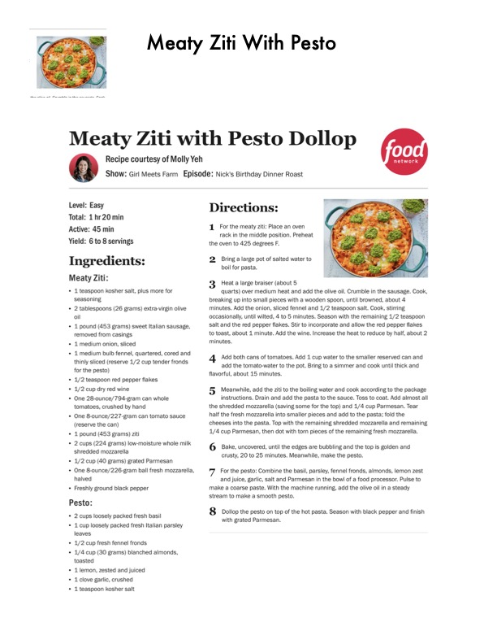

Meaty Ziti with Pesto Dollop

Original cookbook page 284
A hearty pasta dish with sweet Italian sausage, fennel, and three cheeses, topped with a fresh basil-parsley pesto. Recipe courtesy of Molly Yeh from Girl Meets Farm.
Prep: 45 minutes • Cook: 35 minutes • Total: 1 hr 20 minutes
Ingredients
- FOR MEATY ZITI:
- 1 teaspoon kosher salt, plus more for seasoning
- 2 tablespoons (26 grams) extra-virgin olive oil
- 1 pound (453 grams) sweet Italian sausage, removed from casings
- 1 medium onion, sliced
- 1 medium bulb fennel, quartered, cored and thinly sliced (reserve 1/2 cup tender fronds for the pesto)
- 1/2 teaspoon red pepper flakes
- 1/2 cup dry red wine
- One 28-ounce can whole tomatoes, crushed by hand
- One 8-ounce can tomato sauce (reserve the can)
- 1 pound (453 grams) ziti
- 2 cups (224 grams) low-moisture whole milk shredded mozzarella
- 1/2 cup (40 grams) grated Parmesan
- One 8-ounce ball fresh mozzarella, halved
- Freshly ground black pepper
- FOR PESTO:
- 2 cups loosely packed fresh basil
- 1 cup loosely packed fresh Italian parsley leaves
- 1/2 cup fresh fennel fronds
- 1/4 cup (30 grams) blanched almonds, toasted
- 1 lemon, zested and juiced
- 1 clove garlic, crushed
- 1 teaspoon kosher salt
- 2 tablespoons (10 grams) grated Parmesan, plus more for finishing
- 1/3 cup (71 grams) extra-virgin olive oil, plus more for drizzling
Instructions
- FOR THE MEATY ZITI: Place an oven rack in the middle position. Preheat the oven to 425 degrees F.
- Bring a large pot of salted water to boil for pasta.
- Heat a large braiser (about 5 quarts) over medium heat and add the olive oil. Crumble in the sausage. Cook, breaking up into small pieces with a wooden spoon, until browned, about 4 minutes. Add the onion, sliced fennel and 1/2 teaspoon salt. Cook, stirring occasionally, until wilted, 4 to 5 minutes. Season with the remaining 1/2 teaspoon salt and the red pepper flakes. Stir to incorporate and allow the red pepper flakes to toast, about 1 minute. Add the wine. Increase the heat to reduce by half, about 2 minutes.
- Add both cans of tomatoes. Add 1 cup water to the smaller reserved can and add the tomato-water to the pot. Bring to a simmer and cook until thick and flavorful, about 15 minutes.
- Meanwhile, add the ziti to the boiling water and cook according to the package instructions. Drain and add the pasta to the sauce. Toss to coat. Add almost all the shredded mozzarella (saving some for the top) and 1/4 cup Parmesan. Tear half the fresh mozzarella into smaller pieces and add to the pasta; fold the cheeses into the pasta. Top with the remaining shredded mozzarella and remaining 1/4 cup Parmesan, then dot with torn pieces of the remaining fresh mozzarella.
- Bake, uncovered, until the edges are bubbling and the top is golden and crusty, 20 to 25 minutes. Meanwhile, make the pesto.
- FOR THE PESTO: Combine the basil, parsley, fennel fronds, almonds, lemon zest and juice, garlic, salt and Parmesan in the bowl of a food processor. Pulse to make a coarse paste. With the machine running, add the olive oil in a steady stream to make a smooth pesto.
- Dollop the pesto on top of the hot pasta. Season with black pepper and finish with grated Parmesan.
📝 Recipe Notes
Multi-page recipe combined from pages 284-285. Recipe courtesy of Molly Yeh from Girl Meets Farm, episode 'Nick's Birthday Dinner Roast'. Level: Easy. Reserve fennel fronds from main dish for pesto.
Recipe #284 from collection